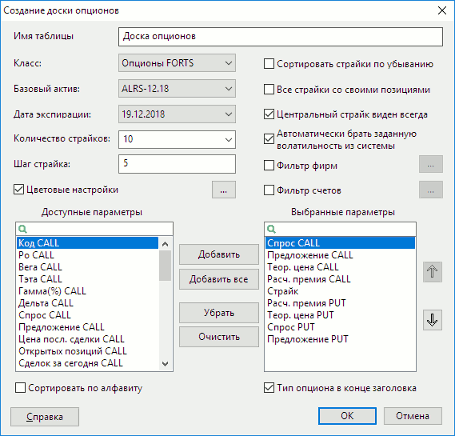
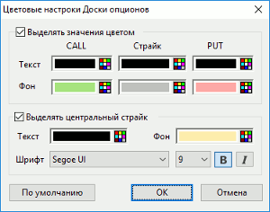
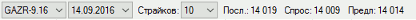

Настройка таблицы

- «Имя таблицы» – позволяет изменить редактируемую часть наименования таблицы.
- «Класс» – выбор наименования класса типа «Опционы».
- «Базовый актив» – выбор базового актива. В списке отображаются активные инструменты классов типа «Опционы», кроме классов режима переговорных сделок.
- «Дата экспирации» – список дат исполнения контрактов по выбранному базовому активу.
- «Количество страйков» – выбор количества строк в таблице, включая центральный страйк. Значение можно установить вручную.
- «Шаг страйка» – значение кратности страйка, в соответствии с которым фильтруются записи для отображения в таблице.
- «Сортировать страйки по убыванию» – при включенном флажке строки в таблице сортируются по убыванию страйков. Если флажок отключен, то строки в таблице сортируются по возрастанию страйков. По умолчанию флажок отключен.
- «Все страйки со своими позициями» – при включенном флажке дополнительно к выбранному количеству строк, отфильтрованных по значению, указанному в поле «Шаг страйка», отображаются строки, не входящие в указанный диапазон, но имеющие контракты с ненулевыми собственными позициями. Флажок недоступен, если в поле «Количество страйков» выбрано значение «Все».
- «Центральный страйк виден всегда» – при включенном флажке независимо от размера окна строки располагаются таким образом, чтобы центральный страйк был виден.
- «Автоматически брать заданную волатильность из системы» – при включенном флажке используется значение волатильности из торговой системы.
- «Фильтр фирм» – если флажок отключен, то при расчете собственных позиций по контракту суммируются позиции по всем кодам фирм, доступным пользователю. При включенном флажке используются коды фирм с учетом настроенного фильтра.
- «Фильтр счетов» – если флажок отключен, то при расчете собственных позиций по контракту суммируются позиции по всем торговым счетам, доступным пользователю. При включенном флажке используются счета с учетом настроенного фильтра.
- «Цветовые настройки» – настройка выделения цветом строк таблицы, раздельно для опционов PUT, CALL и страйков.
- «Доступные параметры / Выбранные параметры» – выбор отображаемых параметров и настройка их очередности.
- «Сортировать по алфавиту» – упорядочить список доступных параметров для заголовков столбцов в алфавитном порядке.
- «Тип опциона в конце заголовка» - показывать тип опциона в конце
заголовка, например, «Предложение CALL» вместо «CALL Предложение». По умолчанию флажок включен.
Цветовые настройки Доски опционов

- «Выделять значение цветом» – при включенном флажке строки таблицы выделяются, в соответствии с настройками, цветом фона и шрифта, раздельно для опционов PUT, CALL и страйков.
- «Выделять центральный
страйк» – при включенном флажке строка центрального страйка выделяется в
соответствии с настройками:
- «Текст» – цвет шрифта;
- «Фон» – цвет фона строки;
- «Шрифт» – выбор используемого шрифта, размера
шрифта, отображения шрифта (жирный/курсив).
Подробнее о настройке цветов см. Настройка цвета в
таблицах и графиках.
Панель инструментов таблицы
Отображение панели инструментов регулируется выбором в таблице пункта контекстного меню «Показывать панель инструментов».

На панели инструментов доступны следующие настройки:
- Список базовых активов. Позволяет выбрать один актив из списка. Список заполнен при наличии инструментов.
- Список дат экспирации. Позволяет выбрать одну дату экспирации. Если инструмент не выбран, то поле пустое. Список обновляется при изменении инструмента.
- «Страйков» – выбор количества строк в таблице, включая центральный страйк.
- Поле «Посл.» – цена последней сделки по базовому активу. Если данных нет, то поле пустое.Недоступно для редактирования.
- Поле «Спрос» – лучшая цена спроса. Если данных нет, то поле пустое. Недоступно для редактирования.
- Поле «Предл.» – лучшая
цена предложения. Если данных нет, то поле пустое. Недоступно для редактирования.
См. также Таблица «Доска опционов».